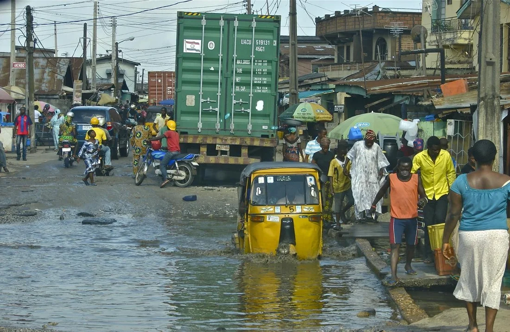
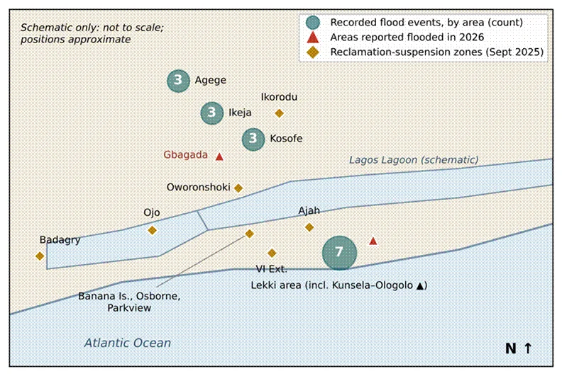

1. Introduction
The month of July 2026 saw parts of Lagos suffer from flash flooding after NEMA had issued a flood alert for 15 Lagos communities for the July to September period. The state government has recently suspended its land reclamation program and initiated a blue-green drainage project. This brief aims to identify which ideas from Rotterdam's experience can be replicated in Lagos and which would be inefficient spending.
2. Problem Statement
The population of Lagos grew from 7.28 million people in 1995–2000 to 17.15 million in 2020–2025, 2.4 times the national growth rate. In 2012, flooding displaced an estimated 2 million people. Lagos is especially prone to pluvial flooding, where rain exceeds drainage capacity.
A satellite study conducted from 1984 to 2023 shows that there has been a severe lowering of natural buffers: an increase in built-up areas of 38%, a decrease in forests of 32%, and a reduction in water bodies of 11%. According to this study, more than 60% of urban Lagos could face extreme flooding by 2050. In Lekki, vegetation cover has fallen by 13% from 2015 to 2025.
About a third of Lagos is made up of geographical land that includes lagoons, rivers, swamps, and streams; parts of Lagos Island are below sea level. In July 2026, the Environment Commissioner said a lagoon rise of about one metre was blocking drains from discharging, a problem called tidal locking. Some causes include siltation in the channels, plastic dumped in the drains, building in the floodplains, and the urban poor in low-lying informal settlements bearing the heaviest burden.
The problem is national. The National Emergency Management Agency (NEMA) reported that flooding in 2024 affected 29 states, killed over 259 people and directly affected nearly 1.05 million, including more than 400,000 displaced by the Alau Dam breach in Borno.


3. Lessons from Comparable Cases: What Rotterdam Does
The “sponge city” idea comes from China: a 2015 State Council guideline set 30 pilot cities and a target that at least 70% of rainwater should soak in rather than run off. Rotterdam's idea of a sponge city is different in this case. Its best-known measure is the Benthemplein water square, opened in 2013, which can hold about 1.7 million litres of roof and street runoff and doubles as a sports field, skate park, and amphitheatre when dry. The city also counted 360,000 square metres of green roofs and aims to put 1 square kilometre of its flat roofs to use by 2030, and residents helped design Benthemplein.
Two crucial learnings that Lagos must adopt from Rotterdam:
- Resident engagement is non-negotiable: Rotterdam's first trial square, Bloemhofplein, was cancelled after residents objected, and the same source stresses early engagement and notes that Benthemplein was costly because of the piling needed.
- Sponges complement, rather than replace, primary flood defences: While the use of sponges is vital in reducing storm impact, sponges do not make for an ideal replacement for traditional ways of flood control since experts have observed that although they can reduce the effect of low-level storms, there is no way they can replace flood control structures, as seen in the Zhengzhou Storm, 2021.

4. Analysis: What Works, What Does Not, and the Trade-Offs
These Rotterdam solutions were assessed on three factors: one, whether the project needs land and maintenance that Lagos is unable to provide at the moment; two, whether the solution reduces both tide and rainfall flooding; and three, whether the government has started the process of implementation.
- Pilot approach on water squares and detention basins: The success of the Benthemplein example is based on the fact that the site is dry and useful for most of the year, thanks to its properly functioning drainage system. However, land scarcity in Lagos makes the idea less promising, as well as its maintenance. Storage capacity will be ineffective when the lagoon is at a higher level and the outfall is protected, which means that there must be pumps and gates near the squares.
- Green roofs (limited priority): The implementation process is costly and requires a lot of structural load capacity, and they provide minimal benefits in fighting tidal flooding. Thus, green roofs need to be mandated only in large commercial structures.
- Retention and permeability: Lagos already requires major developments to include on-site retention. The gap is enforcement at the permit stage.
- Blue-green infrastructure network: The Lekki masterplan makes use of estate lakes, canals, and greenways for storage and controlled water release. The next step will be the mainland, which experiences frequent flooding problems.
- Resident co-design: Low trust and weak community engagement already limit current measures, and Rotterdam's cancelled trial shows the cost of skipping it.
Trade-offs: The use of land for water storage has to compete with provision for housing and commercial activities. Enforcing rules about wetlands and draining also risks displacing poor people if done without safeguards. Although pumps and gates provide an immediate solution, they do not solve the natural buffer function. The recommended solution focuses on protecting wetlands and enforcing rules due to its low cost and root-cause prevention.
5. Recommendations
1. Make wetland and floodplain protection a permanent law
In September 2025, the state suspended all reclamation statewide and required full environmental impact assessments and drainage clearance. Convert this into a gazetted map of protected wetlands and a public register of approvals and prosecution of violators. As a conservation expert quoted in Mongabay put it plainly: move “from lip service to action.”
2. Prioritize maintenance of the basic system rather than prestige improvements
Maintenance efforts currently include about 579 km of secondary collectors and 309 km of main channels, along with the contracting of 218 other channels which would provide approximately 1,500 km. Publish annual performance on the efficiency of desilting, provide filters for culverts, and expand waste collection to informal settlements, since drain blockages preclude upstream storage.
3. Mitigate tidal locking by means of a public schedule
Flap gates and pilot pumps should be put in place in tide-locked sensitive areas.
4. Pilot three water squares in three mainland neighbourhoods
Choose flood-prone mainland areas such as Kosofe, Ikeja or Agege; co-design with residents from the start; fund maintenance before building; and measure litres stored and hours of standing water.
5. Put people at the centre
Fund community early-warning systems and consult residents before any relocation, since the poorest households face the greatest exposure and weak trust undermines current measures.
6. Risks and Gaps
- Maintenance: Nature-based assets have a tendency to fill up with sediment and become neglected without an initial pledge to allocate funding for maintenance on day one.
- Evictions: Enforcement of drainage easements and wetland preservation can lead to evictions from poor communities, and thus consultations and proper resettlement must take place.
- Limitations of the sponge: Water squares will not, by themselves, solve the problem of extreme weather events or high levels in the lagoon. The employment of pumps, gates, and defences against the sea is essential.
- Cost estimates: The literature assessed does not give cost estimates specifically for Lagos' water squares. However, an estimate given by LSE researchers suggests that grey-green infrastructure is potentially much less expensive than grey infrastructure alone.